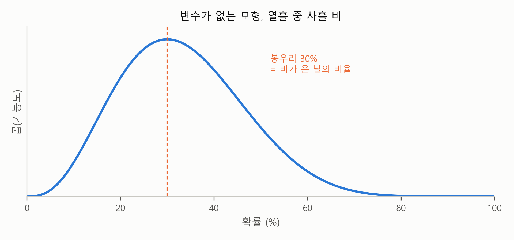
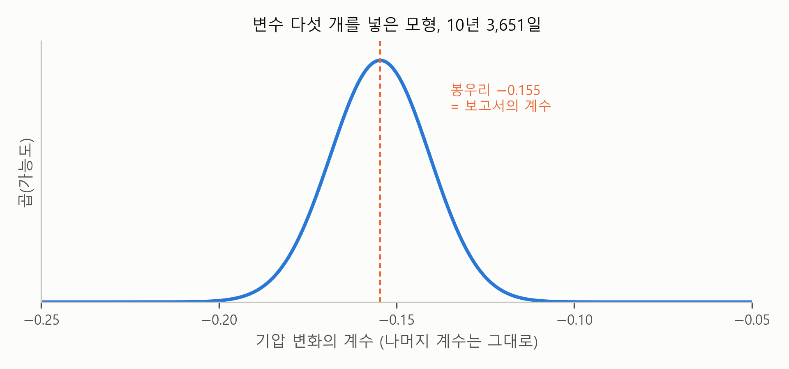
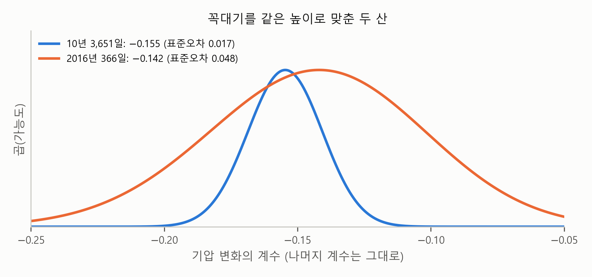

5. 가장 그럴듯한 계수 — 최대가능도 추정#
앞의 두 절에서 보고서의 계수를 점수로 바꾸고, 점수를 확률로 바꾸고, 확률의 말로 옮겼습니다. 그런데 계수 −0.155나 0.178 같은 숫자는 어디서 나왔을까요? 직선의 회귀식에서는 기준이 분명했습니다. 단순회귀분석 장에서 배운 최소제곱법은 잔차의 제곱을 모두 더한 값이 가장 작아지는 계수를 골랐습니다. 로지스틱 회귀는 다른 기준을 씁니다. 이 절의 답을 먼저 말하면 이렇습니다. 계수의 후보를 하나 정하면 날마다 비 올 확률이 나옵니다. 그 확률로 모형이 날마다 실제로 일어난 일에 얼마나 높은 확률을 매겼는지 보고, 그 확률을 모두 곱합니다. 곱이 가장 큰 후보를 고릅니다. 실제로 일어난 일을 가장 그럴듯하게 만드는 계수입니다.
실제로 일어난 일에 매긴 확률#
계수의 후보를 하나 정하면, 그 계수로 날마다 내일비 확률을 계산할 수 있습니다. 좋은 계수라면 다음 날 실제로 비가 온 날에는 높은 확률을, 비가 오지 않은 날에는 낮은 확률을 매겼을 것입니다. 그래서 날마다 “모형이 실제로 일어난 일에 매긴 확률”을 봅니다. 비가 온 날은 모형이 계산한 비 올 확률이고, 오지 않은 날은 비가 오지 않을 확률(100%에서 비 올 확률을 뺀 값)입니다.
사흘만으로 예를 들어 봅시다. 첫째 날은 다음 날 비가 왔고, 둘째 날과 셋째 날은 오지 않았습니다. 계수 후보 A는 사흘의 비 올 확률을 80%, 20%, 30%로 계산하고, 후보 B는 셋 다 50%로 계산한다고 합시다. 표 5-1이 두 후보가 실제로 일어난 일에 매긴 확률입니다.
표 5-1. 사흘의 실제 결과와 두 계수 후보
첫째 날 |
둘째 날 |
셋째 날 |
곱 |
|
|---|---|---|---|---|
다음 날 비 |
O |
X |
X |
|
후보 A |
||||
계산한 비 올 확률 |
80% |
20% |
30% |
|
실제로 일어난 일에 매긴 확률 |
0.8 |
0.8 |
0.7 |
0.448 |
후보 B |
||||
계산한 비 올 확률 |
50% |
50% |
50% |
|
실제로 일어난 일에 매긴 확률 |
0.5 |
0.5 |
0.5 |
0.125 |
표에서 보듯이 비가 오지 않은 둘째 날과 셋째 날에는 100%에서 비 올 확률을 뺀 값이 들어갑니다. A가 둘째 날에 매긴 확률은 1 − 0.2 = 0.8입니다.
이 세 값을 곱합니다. 왜 곱할까요? 동전을 세 번 던져 세 번 모두 앞면이 나올 확률은 1/2을 세 번 곱한 1/8입니다. 날마다의 결과가 서로 따로 정해진다고 보면, 마찬가지로 이 곱은 “모형이 맞다면 사흘의 결과가 실제와 똑같이 나올 확률”입니다. 셋을 곱하면 A는 0.448, B는 0.125입니다. A가 사흘의 실제 결과를 훨씬 그럴듯하게 설명합니다.
이 곱을 가능도(likelihood)라고 부르고, 가능도가 가장 커지는 계수를 찾는 방법을 최대가능도 추정(maximum likelihood estimation)이라고 합니다. 가능도는 우도(尤度)라고도 합니다. 실제로 일어난 일을 가장 그럴듯하게 만드는 계수를 고른다는 뜻입니다.
참고: 로지스틱 회귀가 최소제곱법과 “다른 기준”을 쓴다고 했지만, 사실 최소제곱법도 같은 원리에서 나옵니다. 직선의 회귀식에서 잔차가 0을 중심으로 좌우가 대칭인 종 모양으로 흩어진다고 보고(이런 흩어짐을 정규분포, normal distribution라고 부릅니다) 가능도를 계산하면, 가능도가 가장 커지는 직선이 바로 잔차의 제곱을 더한 값이 가장 작은 직선입니다. 실제로 일어난 일을 가장 그럴듯하게 만드는 계수를 고른다는 원리는 같고, 결과가 연속된 숫자이면 그 원리가 최소제곱법이 되며, 결과가 0과 1이면 이 절에서 본 확률의 곱이 됩니다.
곱이 가장 커지는 계수#
후보 둘을 비교하는 것은 쉽습니다. 그런데 계수의 후보는 셀 수 없이 많습니다. 가장 좋은 후보는 어떻게 찾을까요?
변수가 없는 모형으로 생각하면#
먼저 아주 단순한 모형부터 봅시다. 변수를 아예 넣지 않고, 어느 날에나 비 올 확률을 똑같이 매기는 모형입니다.
설명을 위해 예를 하나 정해 둡시다. 열흘 동안의 기록이 있고, 그 가운데 사흘은 다음 날 비가 왔고 나머지 7일은 오지 않았다고 해 봅시다. 실제 데이터가 아니라 가정한 예입니다. 비가 온 날의 비율은 30%입니다. 변수를 하나도 쓰지 않는다는 것은 이날과 저날이 어떻게 다른지 모형이 전혀 보지 못한다는 뜻입니다. 그러니 이 모형이 할 수 있는 일은 모든 날에 똑같은 확률 하나를 매기는 것뿐이고, 모형이 정할 숫자도 그 확률 하나입니다. 우리는 비가 온 비율이 30%라는 것을 압니다. 하지만 컴퓨터에는 이 답을 숨겨 두고, 열흘의 기록만 주면서 최대가능도 방법으로 확률을 찾아보라고 해 봅시다. 컴퓨터는 어떤 확률을 고를까요? 몇 가지 확률을 넣어 곱을 계산해 보며 확인해 봅시다.
모형이 모든 날에 똑같이 50%를 매기면, 비가 온 사흘에 매긴 확률은 0.5이고, 비가 오지 않은 7일에 매긴 확률도 1 − 0.5 = 0.5입니다. 열흘의 곱은 0.5를 열 번 곱한 값, 약 0.00098입니다.
이번에는 모형이 모든 날에 똑같이 20%를 매긴다고 해 봅시다. 그러면 비가 온 사흘에는 0.2를 매기고, 비가 오지 않은 7일에는 1 − 0.2 = 0.8을 매깁니다. 열흘의 곱은 0.2를 세 번, 0.8을 일곱 번 곱한 값, 약 0.00168입니다. 50%를 매길 때보다 큽니다.
같은 방법으로 몇 가지 확률에 대해 계산한 것이 표 5-2입니다.
표 5-2. 모든 날에 똑같은 확률을 매기는 모형 — 열흘 가운데 사흘 비
확률 |
10% |
20% |
30% |
40% |
50% |
|---|---|---|---|---|---|
계산 |
\(0.1^3 \times 0.9^7\) |
\(0.2^3 \times 0.8^7\) |
\(0.3^3 \times 0.7^7\) |
\(0.4^3 \times 0.6^7\) |
\(0.5^3 \times 0.5^7\) |
곱(가능도) |
0.00048 |
0.00168 |
0.00222 |
0.00179 |
0.00098 |
확률을 0%부터 100%까지 바꿔 가며 곱(가능도)의 값을 찍어 연결하면 그림 5-1처럼 산 모양이 나옵니다. 봉우리는 정확히 30%, 비가 온 날의 비율입니다. 가정한 예처럼 열흘 가운데 사흘 비가 왔다면, 가능도를 가장 크게 만드는 확률은 0.3입니다. 이 열흘의 기록을 주고 컴퓨터에 변수 없이 최대가능도 추정을 해 달라고 하면, 컴퓨터는 모든 날에 매길 확률로 0.3을 골라 줍니다. 어느 날에나 똑같은 확률을 매겨야 한다면, 가장 그럴듯한 확률은 실제로 비가 온 날의 비율인 것입니다. 이 장의 데이터에서도 같습니다. 3,651일 가운데 다음 날 비가 온 날은 1,076일, 29.5%이고, 이 모형의 봉우리도 29.5%입니다.

그림 5-1. 열흘 가운데 사흘 비가 왔을 때, 모든 날에 똑같은 확률을 매기는 모형의 가능도. 봉우리는 30%다.
계수 하나만 움직여 보면#
이제 가정한 열흘의 예를 떠나, 이 장의 날씨 데이터 3,651일로 돌아옵니다. 그리고 보고서의 모형처럼 변수를 넣습니다. 그러면 날마다 점수가 다르고 비 올 확률도 다릅니다. 찾을 것은 확률 하나가 아니라 상수와 계수 다섯, 모두 여섯 개입니다. 그래도 생각은 같습니다. 여섯 숫자의 후보마다 3,651일의 곱을 계산하고, 곱이 가장 큰 곳을 찾습니다.
여섯 개를 한꺼번에 그릴 수는 없으니 하나만 골라 봅시다. 기압 변화의 계수를 고르겠습니다. 나머지 다섯은 보고서의 값에 그대로 두고, 이 계수의 값만 바꿔 가며 곱이 어떻게 달라지는지 봅시다. 그렇게 그린 것이 그림 5-2입니다. 역시 산 모양이고, 봉우리는 −0.155, 보고서의 값입니다. 다른 계수도 하나씩 바꿔 보면 모두 보고서의 값에서 봉우리가 됩니다. 보고서의 여섯 숫자는 여섯 개를 함께 바꿔 가며 찾은, 곱이 가장 커지는 조합이기 때문입니다.

그림 5-2. 보고서의 모형에서 기압 변화의 계수만 바꾸고 나머지 계수는 그대로 둘 때의 가능도(10년치, 3,651일). 봉우리는 −0.155, 보고서의 계수다.
3,651개의 확률을 곱하면 소수점 아래로 0이 수백 개 붙는 아주 작은 수가 됩니다. 그래서 통계 프로그램은 곱 대신 확률마다 로그를 취해 더한 값(로그 가능도, log likelihood)을 씁니다. 곱이 클수록 로그의 합도 크므로 봉우리의 자리는 같습니다. AI가 내놓는 결과에 “Log-Likelihood”라는 줄이 있다면 이 값입니다.
이 봉우리는 최소제곱법과 달리 식 하나로 바로 계산되지 않습니다. 그렇다고 후보를 하나씩 모두 계산해 볼 수도 없습니다. 앞에서 후보가 셀 수 없이 많다고 한 까닭이 여기 있습니다. 계수는 −0.155와 −0.156 사이에도 −0.1551, −0.1552처럼 얼마든지 잘게 나눌 수 있는 숫자이고, 그런 숫자 여섯 개를 함께 정해야 합니다. 그래서 컴퓨터는 산을 오르듯이 찾습니다. 아무 후보에서 출발해 곱이 커지는 쪽으로 계수를 조금씩 옮기고, 더 이상 커지지 않으면 멈춥니다. 그 자리가 최대가능도 추정의 답입니다. 우리가 직접 할 일은 없습니다. AI나 통계 프로그램에 로지스틱 회귀를 해 달라고 하면 이 계산을 합니다.
봉우리의 모양과 표준오차#
봉우리의 자리가 계수라면, 봉우리의 모양은 무엇을 말할까요? 같은 기압 변화의 계수를 2016년 한 해, 366일의 데이터만으로 구해 봅시다. 그림 5-3의 주황 곡선입니다. 파란 곡선은 그림 5-2의 10년치 산입니다. 봉우리는 −0.142로 10년치의 −0.155와 비슷합니다. 그런데 모양이 다릅니다. 두 곡선의 꼭대기 높이를 맞춰 놓고 보면 10년치의 산은 뾰족하고 1년치의 산은 완만합니다.

그림 5-3. 기압 변화의 계수만 바꿀 때의 가능도. 파랑은 그림 5-2와 같은 10년치(3,651일), 주황은 2016년 한 해(366일)만으로 구한 것이다. 가능도의 크기가 서로 크게 달라 두 곡선 모두 꼭대기를 같은 높이로 맞춰 그렸다. 세로축에 숫자가 없는 것도 같은 까닭이다.
뾰족한 산에서는 봉우리에서 조금만 벗어나도 곱이 크게 줄어듭니다. 데이터가 그 계수를 분명하게 가리키는 것입니다. 완만한 산에서는 봉우리에서 꽤 떨어진 값도 곱이 별로 줄지 않습니다. 데이터가 그만큼 덜 분명하게 가리킵니다.
봉우리의 뾰족함이 표준오차로 이어집니다. 컴퓨터는 봉우리 근처의 모양으로 표준오차를 계산합니다. 보고서에서 기압 변화의 표준오차는 0.017이고, 1년치로 구하면 0.048로 거의 세 배입니다. 봉우리가 뾰족할수록 표준오차가 작고, 완만할수록 큽니다. 데이터가 많을수록 봉우리는 뾰족해집니다.
표준오차가 정해지면 그다음은 지금까지와 같습니다. 표준오차는 다른 날들로 데이터를 다시 모아 계산하면 계수가 얼마나 흔들릴지를 말하고, \(p\)값은 참값이 0이라면 이만한 계수가 우연히 나올 확률입니다. 기압 변화의 계수 −0.155는 표준오차 0.017의 9배쯤이라 \(p\)값이 0.001보다 작습니다. 표 3-2에서 오늘비의 계수 0.281은 표준오차 0.110의 두 배 반쯤이고(\(p\)값 0.011), 나머지 네 계수는 표준오차의 3.6배에서 14.9배입니다(\(p\)값 모두 0.001 미만). 계산 방법은 달라도 표준오차와 \(p\)값의 뜻은 그대로입니다.
보고서에 \(R^2\)이 없는 까닭#
다중회귀분석 장의 보고서에는 \(R^2\)이 있었는데, 이번 보고서에는 없습니다. \(R^2\)은 최소제곱법에서 나온 숫자이기 때문입니다. 로지스틱 회귀는 최소제곱법을 쓰지 않으므로 보통의 \(R^2\)이 없습니다. 비슷한 역할을 하도록 만든 숫자(유사 \(R^2\), pseudo \(R^2\))가 있고 AI가 보고서에 넣기도 하지만, 보통의 \(R^2\)처럼 “흩어짐의 몇 퍼센트를 설명했다”로 해석할 수 없어서 이 장에서는 쓰지 않습니다. 모형이 확률을 얼마나 잘 말하는지는 6절에서 다른 방법으로 확인합니다.
평균은 맞는다, 그러면 날마다는#
최대가능도 추정에는 쓸모 있는 성질이 하나 있습니다. 상수가 들어 있는 로지스틱 회귀를 이 방법으로 구하면, 모형이 3,651일에 계산한 비 올 확률의 평균은 실제로 비가 온 날의 비율과 정확히 같아집니다. 이 장의 모형에서는 둘 다 29.5%입니다. 변수가 없는 모형의 봉우리가 실제 비율이었던 것과 같은 이치입니다. 전체로 보면 모형의 확률은 실제와 맞는 셈입니다. 그러면 날마다의 확률도 맞을까요? 30%라고 한 날들에는 정말 열에 셋쯤 비가 왔을까요? 다음 절의 물음입니다.
요약 — 이 절의 물음과 답
로지스틱 회귀의 계수는 어떻게 구하나? 계수의 후보마다 모형이 날마다 실제로 일어난 일에 매긴 확률을 구해 모두 곱한다. 이 곱이 가능도이고, 가능도가 가장 커지는 계수를 고르는 방법이 최대가능도 추정이다. 실제로 일어난 일을 가장 그럴듯하게 만드는 계수다.
가장 큰 곱은 어떻게 찾나? 식 하나로 바로 계산되지 않아서, 컴퓨터가 곱이 커지는 쪽으로 계수를 조금씩 옮기다 더 커지지 않는 곳에서 멈춘다. 변수가 없는 모형이라면 봉우리는 실제로 비가 온 날의 비율이다. 프로그램은 곱 대신 로그의 합(로그 가능도)을 쓴다.
표준오차는 어디서 나오나? 봉우리 근처의 모양에서 나온다. 봉우리가 뾰족할수록 표준오차가 작다. 데이터가 많을수록 봉우리는 뾰족해진다. 표준오차와 \(p\)값의 뜻은 지금까지와 같고, 보통의 \(R^2\)은 없다.